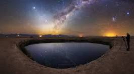

Por que o Chile?
O Chile é famoso por seus céus claros, perfeitos para observar estrelas. O Deserto do Atacama, com baixa umidade e poluição luminosa mínima, é um dos melhores locais do mundo.


O Chile é famoso por seus céus claros, perfeitos para observar estrelas. O Deserto do Atacama, com baixa umidade e poluição luminosa mínima, é um dos melhores locais do mundo.